different use of 'if'


simplitly express without 'if'
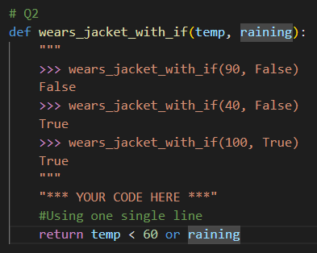
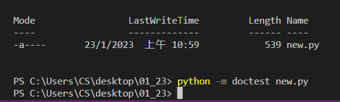
if_function differ from if_statement
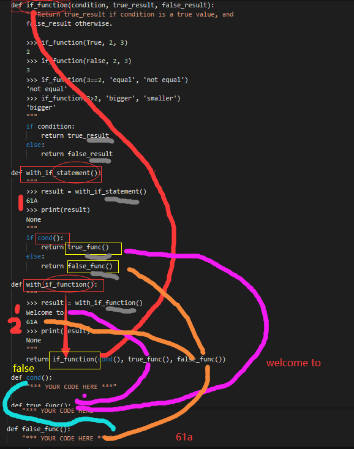
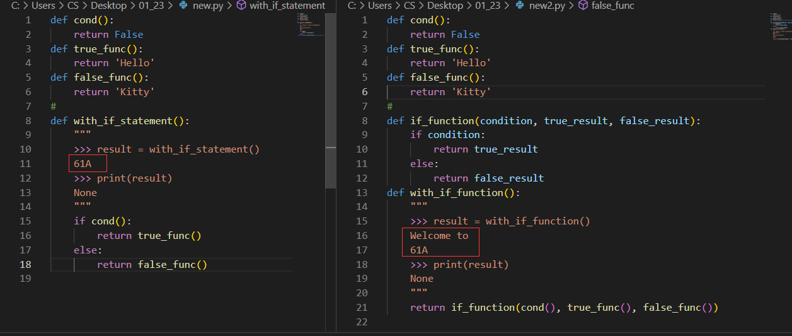
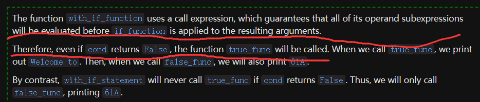
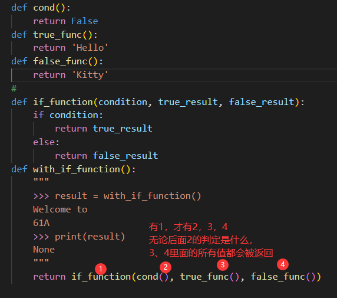 所有的可能值被返回，因为只有这样，才能保证，所有的结果都会被判断
isPrime
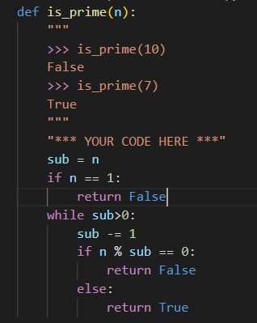Fizzbuzz
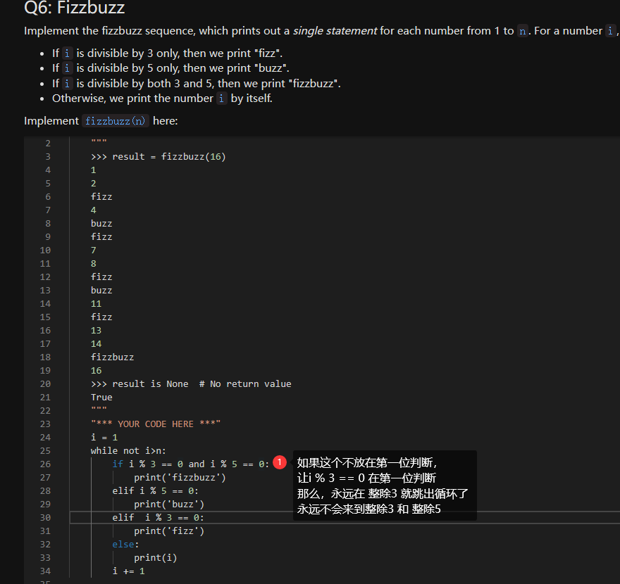disc1结束
exam_prep开始
a little bit diffcult
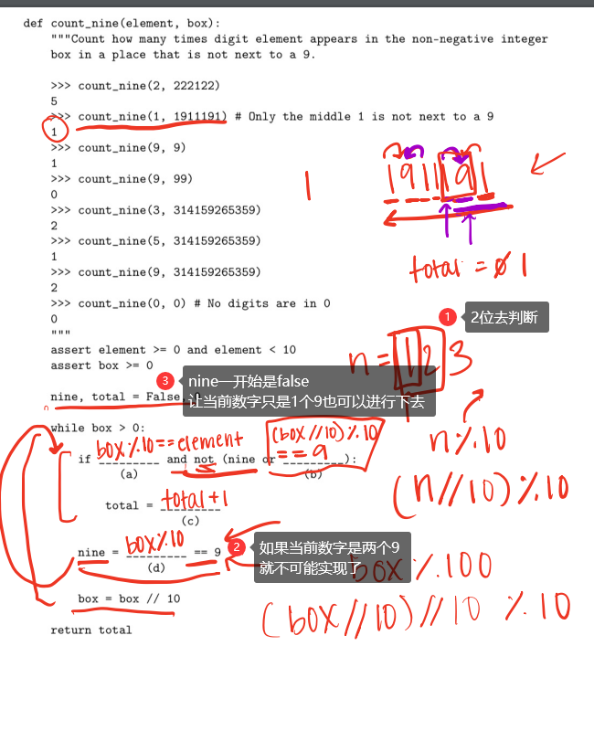an_easy_practise

exam_prep结束
一些语句，看了知道，不看死想也想不到
-
count( )
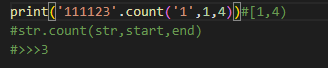 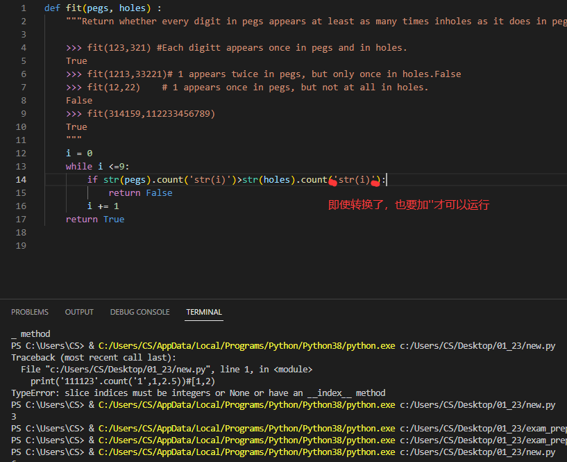 -
mul
from operator import add, mul -
unix
- mv sth route
- cd .. 和cd ../..
- unzip file.zip#sudo apt intall unzip 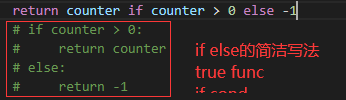
- //不是砍掉而是floordiv6//4=1 6/4=1.5 //一定是整数，就不用转int了
- i是iteration的意思！这是shorthand，知道了就是降维打击
- 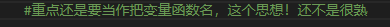 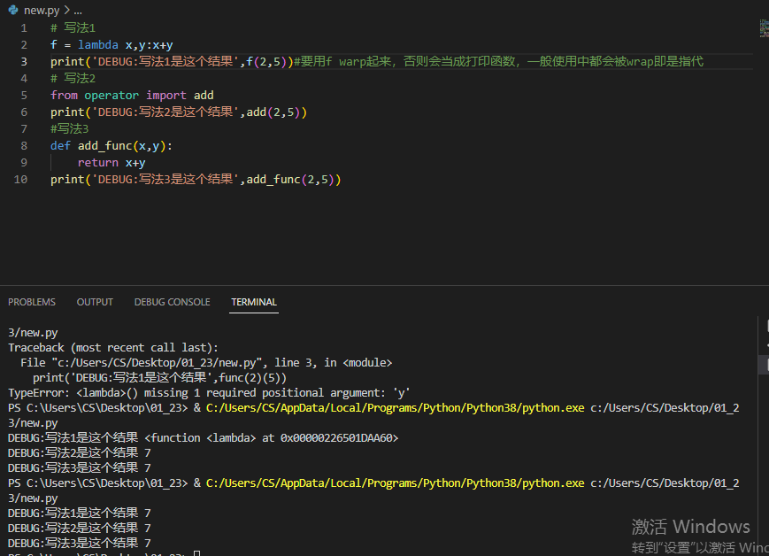
- return n == 0 ? 1 : f(n-1)*n 是什么意思？#
cond ? action1 : action2
when n == 0 return 1,otherwise,return f(n-1)*n
这不是Python的写法，python的是上面的那种if else简便写法
result = 为真时的结果 if 判断条件 else 为假时的结果
action1 if cond else action2
链接
所有task和solution textbook疑惑
位于hw02.py倒数第二个程序，程序名子summation_using_accumulate(n, term)
已解决 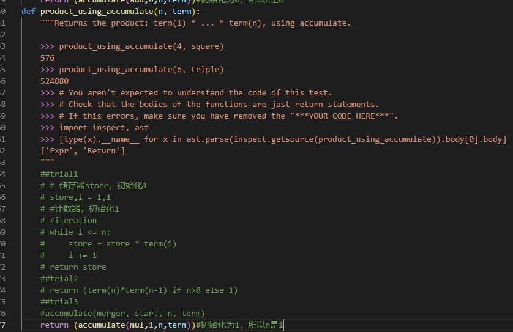